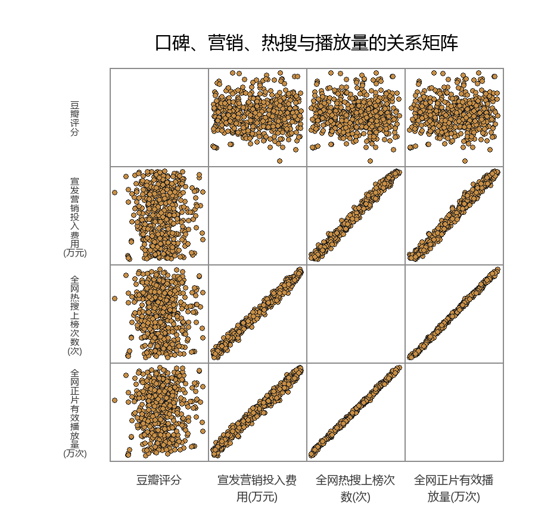
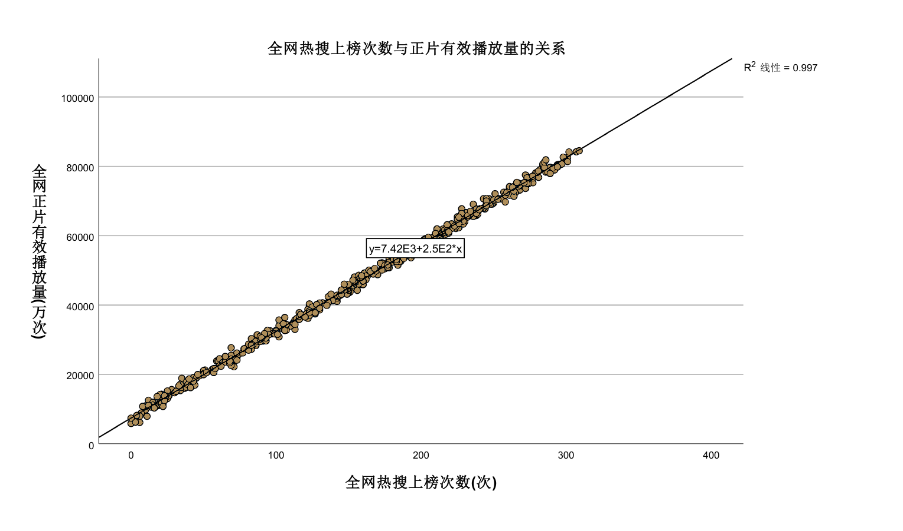
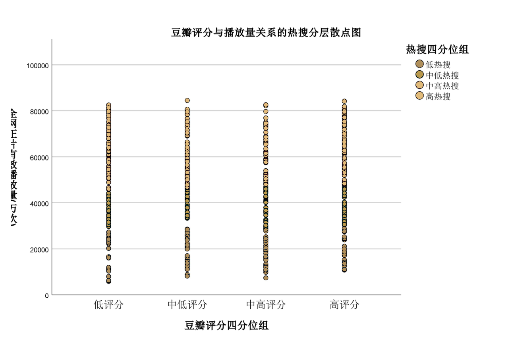
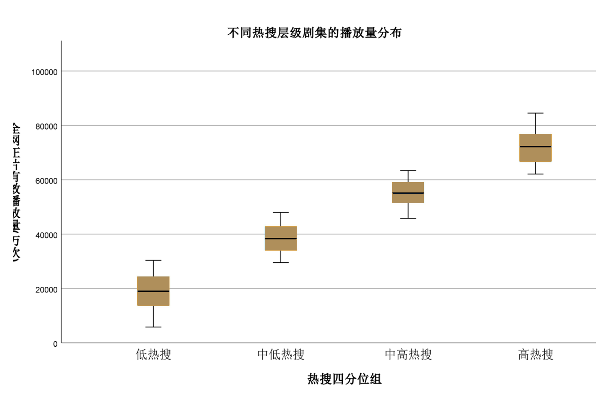
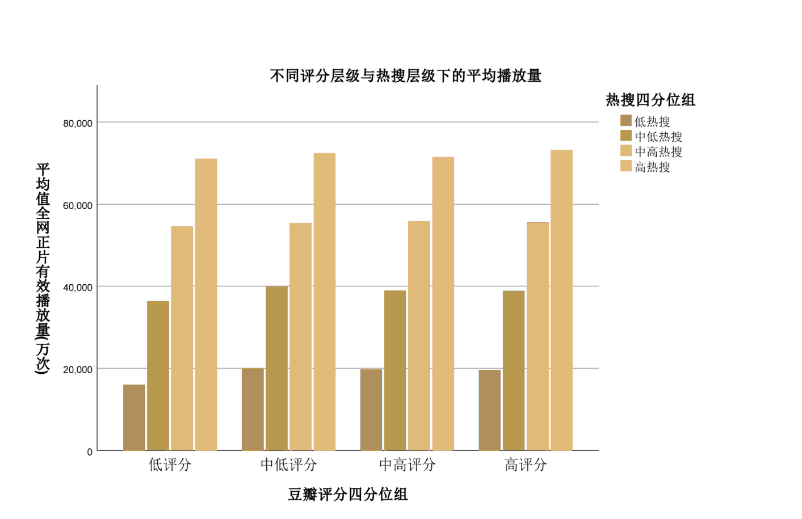
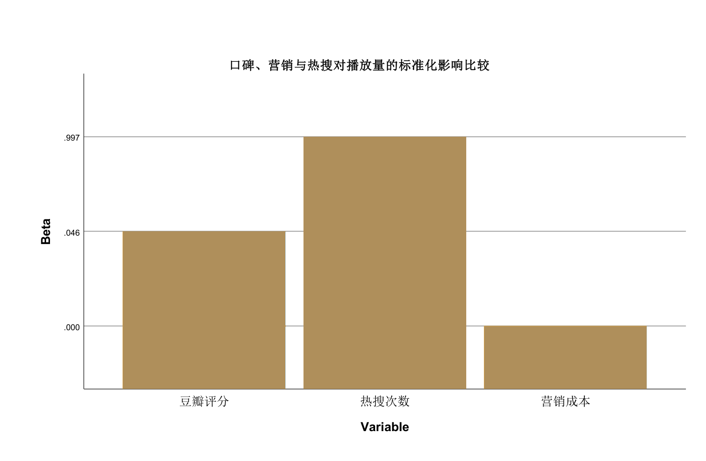

热度从哪里来
新剧《主角》的热度仍在延烧。在社交平台上，角色片段、剧情讨论、主演采访和观众二创持续扩散；在评分平台上，它也保持着较高水准。高播放、高讨论、高评分同时出现，让这部剧很快被放进“现象级热剧”的叙事里。
但在热度之外，另一种怀疑也始终存在。几乎每一轮剧集热潮背后，都会伴随类似争议：热搜是自然发酵，还是宣发推动？评论区里的好评是真实观众反馈，还是粉丝控评？播放量的抬升来自内容吸引力，还是营销资源反复加码？
“高开低走”“买热搜”“黑水军”“营销剧”这些词频繁出现后，观众对剧集热度的信任正在变得谨慎。一部剧反复出现在热搜上，未必立刻带来认同，有时反而会激起疑问：它是真的火了，还是被推火了？
一部剧到底怎样才算真正火了？是豆瓣评分稳定在高位，是微博、抖音等平台热搜不断出现，还是全网正片有效播放量持续走高？这些指标常常被放在同一张宣传海报里，构成所谓“爆款”的证据。但它们并不指向同一种事实。
评分更接近观众观看后的评价沉淀，热搜更接近观看前的注意力入口，播放量则是内容消费之后留下的数据结果。三者同时升高时，一部剧可能真的形成了公共讨论；但当它们出现错位时，问题也随之浮现：剧集爆火，究竟是观众口碑推动，还是资本营销推高？
本报道基于500部剧集样本，观察豆瓣评分、宣发营销投入、全网热搜上榜次数和全网正片有效播放量之间的关系。调查试图回答一个更具体的问题：当“1分口碑”和“10次热搜”同时摆在播放量面前，谁的撬动杠杆更大？

这组样本并不是无人问津的长尾剧集，而是一批已经进入市场竞争、平台分发和观众评价系统的内容产品。它们大多已经被看见，也已经被讨论。问题不在于它们有没有热度，而在于热度从哪里来，又被谁放大。
热搜跑在口碑前面
在500部样本中，一个趋势十分明显：热搜越频繁，播放量越容易被推高。相比之下，豆瓣评分与播放量之间并没有形成同样紧密的对应关系。
这构成了本次调查最直接的发现：在播放量增长这件事上，热搜比评分更接近流量分发的前端。观众可能因为一部剧质量好而留下评分，但更多时候，观众首先是因为它被推到热搜、短视频推荐流和社交话题场中，才开始点击、观看和讨论。

从图2可以看到，热搜次数与播放量之间呈现清晰的上升趋势。热搜越多，播放量越高。这种关系在剧集行业并不陌生。近年来，一部剧的宣传已经不再局限于定档海报、预告片和主演采访，而是进入更细碎、更高频的社交平台传播。
角色名场面、剧情反转、演员互动、CP话题、OST剪辑，甚至争议剧情和负面评价，都可能成为新的热搜入口。过去，电视时代的核心资源是黄金档。现在，网络剧集争夺的是热搜位、短视频推荐流和平台首页。
一个话题能否被看见，往往决定了一部剧能否进入更多潜在观众的视野。热搜因此不再只是热度的结果，也越来越像热度的起点。
这也是当下剧集营销最复杂的地方。热搜表面上是讨论，背后却可能包含多种力量：真实观众的自发传播，粉丝群体的组织化扩散，平台算法的推荐机制，以及片方和平台的宣发安排。它们共同把一部剧推向更大的公共视野。
对普通观众来说，热搜提供了一种观看提示：这部剧正在被讨论，这个角色正在出圈，这段剧情不能错过。可当这种提示过于密集，观众就会开始怀疑，它究竟是大众讨论的自然结果，还是一套被安排好的可见度工程？
在剧集市场里，热搜已经不只是“大家都在看”的证明，它也可能成为“让大家开始看”的工具。它把作品推到观众面前，也把观众推向作品。
口碑不是没用，而是作用更慢
热搜并不等同于口碑。豆瓣评分与播放量之间相对松散的关系，揭示了另一层现实：一部剧被更多人播放，并不必然意味着它被更多人认可。评分发生在观看之后，热搜则常常发生在观看之前。
前者是评价，后者是召唤。前者依赖观众体验，后者依赖可见度资源。正是在这一区别中，“真火”和“被推火”的边界开始变得模糊。
从图3看，豆瓣评分与播放量之间的点位分布较为分散。高评分剧不一定拥有最高播放量，中等评分甚至偏低评分的剧，也可能因为强宣发和高话题度获得可观播放。这说明评分代表的更多是观众对内容质量的集中反馈，却不是播放量的唯一发动机。

这并不意味着口碑无效。恰恰相反，口碑往往决定一部剧能不能走得更远。只是它与热搜发挥作用的时间不同。热搜解决的是“被看见”的问题，评分解决的是“被认可”的问题。
热搜可以把观众带进来，口碑决定观众是否留下。热搜制造入口，口碑形成沉淀。热搜可以让一部剧迅速出现在公共讨论中，但真正让观众记住角色、剧情和情绪的，仍然是作品本身。
问题在于，平台和资本往往更急于看到前者。开播数据、首周播放、话题排名、招商反馈，这些指标都更偏向即时表现。相比之下，口碑的形成需要时间，需要真实观看，也需要更开放的讨论空间。
这也解释了为什么一些剧在播出初期声量很高，后期却陷入“高开低走”的争议。热搜可以把观众带到剧集面前，但如果剧情支撑不足，人设崩塌，节奏拖沓，观众迟早会把失望写进评分和评论里。到了那时，前期堆起的热度也会反过来成为质疑的理由。
所谓爆款，至少包含两个层面：一是被看见，二是被认可。口碑主要解决“是否被认可”的问题，热搜则首先解决“是否被看见”的问题。在平台竞争和注意力稀缺的环境下，“被看见”往往先于“被认可”，有时甚至会短暂压过“被认可”。
1分口碑，敌不过10次热搜？
如果把问题压缩成一个更直观的比较：一部剧豆瓣评分提高1分，和多上10次热搜，哪个更能撬动播放量？
基于500部剧集样本的测算给出了清晰答案：10次热搜带来的播放量增量，约为1分豆瓣评分所对应增量的3倍。也就是说，在播放量这场竞争中，热搜的短期杠杆明显更强。
这个结果并不难理解。豆瓣评分的提升，通常需要真实观看、评价积累和口碑发酵，过程更慢，也更依赖内容本身。而热搜上榜可以在更短时间内制造入口，把剧集推送到尚未观看的人面前。
对于追求首播声量、招商效果和平台数据的剧集生产链条来说，热搜的即时性更强，也更容易被量化和复盘。


按照热搜次数将剧集分为低热搜、中低热搜、中高热搜和高热搜四组后，不同组别的播放量分布出现明显差异。图4显示，低热搜组播放量整体较低，高热搜组播放量明显抬升。箱线图中的中位数和整体分布，也呈现出随热搜层级上升而上移的趋势。
这张图把“热搜影响播放量”从单个散点关系转化为分层比较。它说明，不是个别剧集偶然因为热搜而播放量高，而是在整体样本中，热搜层级本身已经与播放量层级高度绑定。
对于剧集行业来说，这意味着热搜不再只是宣传补充，而可能已经成为流量生产链条中的关键环节。谁能够持续获得可见度，谁就更可能获得播放量；谁能够在社交平台上制造持续讨论，谁就更容易被包装成爆款。
这并不意味着内容质量失去了意义。高评分剧仍然可能获得更稳定的长尾传播、更好的品牌声誉和更强的观众忠诚度。但如果只看播放量，尤其是短期播放量，热搜层级的影响更直接。
对平台和资本而言，这种直接性极具吸引力。它把原本难以控制的口碑，转化为可以运营、可以投放、可以复盘的数据指标。
热搜和宣发为何总在一起
更值得追问的是：热搜真的只是观众讨论自然形成的吗？
数据中一个值得警惕的细节是：宣发营销投入和热搜次数总是走得很近。投入越高，热搜越密集；热搜越密集，播放量也越容易被抬高。它们不像两股完全独立的力量，更像同一套传播机制中的两个环节。
剧方投入更多宣发资源，往往也更容易带来更多话题曝光、热搜上榜和平台推荐；而热搜次数增加，又会进一步放大播放量数据，形成“投入—曝光—播放—再曝光”的循环。在这条链路中，热搜既可能是结果，也可能成为新的起点。
这也解释了一个看似矛盾的现象：当热搜已经把宣发效果吸收进去时，单独看宣发投入，它的存在感反而会被削弱。但这并不意味着宣发无效，更可能说明宣发的作用已经通过热搜、话题和平台曝光表现出来。
换句话说，热搜至少不是一个完全独立于宣发投入的自然变量。它可能是宣发资源转化为播放量的重要通道之一。

这里需要谨慎理解。数据不能直接证明每一次热搜都是购买结果，也不能说所有高播放剧都依赖营销推高。更准确的说法是：在这组样本中，播放量与热搜之间高度绑定，而热搜又与宣发投入严重重叠。这一组合至少说明，剧集热度已经深度嵌入营销资源和平台传播机制之中。
热度并不总是自然燃烧出来的。它也可能是在内容、资源、算法和话题机制共同作用下被推高的。
这正是观众反感“营销剧”的原因。观众并不是反对宣传本身。一部剧需要告知观众，需要预告，需要主创露出，也需要平台推荐，这些都是正常商业行为。真正引发抵触的是，当宣发包装成口碑，当热搜伪装成自发讨论，当粉丝控评挤压普通观众表达空间时，公共评价场就会被污染。
对普通观众而言，困扰并不在于一部剧有没有宣传，而在于宣传是否替代了判断。当社交平台上不断出现相似话术、同质化剪辑和高度一致的安利语句时，观众面对的已不只是作品本身，而是一整套被包装好的观看理由。它告诉你“这部剧已经爆了”，也试图暗示你“不看就落伍了”。
在剧集市场中，口碑系统本来承担着一种纠偏功能。它让观众有机会在平台宣传之外，说出自己的真实感受。可当营销话术、粉丝组织和平台算法共同进入评价场，口碑也会被重新塑形。
一部剧可能在热播初期拥有铺天盖地的好评、剪辑和安利，但随着剧情推进，真实观众的体验逐渐浮出水面，“高开低走”的争议才会集中爆发。
爆款可以被推高，信任不能
这项调查最终指向的，并不是一个简单的是非判断。它不能说明热搜一定虚假，也不能说明口碑一定真实。它真正揭示的是，在当前剧集市场中，播放量越来越深地嵌入注意力分发机制。
谁能获得更多入口，谁就更容易获得更多播放；谁拥有更强宣发能力，谁就更可能把作品推向公共视野。这并不必然否定作品本身，但它让“爆款”这个词变得不再纯粹。
如果播放量越来越依赖可见度资源，那么好内容还有多少机会仅凭口碑突围？答案并非悲观。口碑仍然重要，只是它的作用方式与热搜不同。热搜能带来第一波点击，口碑决定观众是否继续观看、是否推荐他人、是否在完结后仍愿意讨论。
热搜可以制造入口，但很难独自支撑长久的内容生命力。许多剧能够在短期获得高播放，却无法留下角色、台词和公共记忆；而一些真正扎实的作品，即便起初声量有限，也可能通过长尾传播逐渐积累评价。
问题在于，当前剧集工业的考核节奏往往更偏向前者。平台需要开播数据，片方需要招商反馈，艺人团队需要话题表现，品牌方需要曝光回报。于是，热搜、短视频切片、粉丝打榜和平台战报共同组成了一套即时评价体系。
在这套体系里，速度比沉淀更重要，声量比讨论质量更容易被看见。
这也解释了为什么观众会对“黑水军”和“粉丝控评”越来越敏感。公众并不是看不懂营销，而是越来越能识别营销。当相似的夸赞话术在评论区重复出现，当负面评价被迅速围攻，当某些话题以异常密集的频率登上热搜，观众会自然产生怀疑：这到底是大众讨论，还是组织化传播？
从新闻调查角度看，最值得追问的不是“营销是否存在”，而是“营销是否越过了正常宣传与舆论操控的边界”。正常宣发提供信息，让观众知道一部剧的存在；过度营销则试图替观众预设结论，让观众相信一部剧已经“全网爆了”“人人都在看”“不看就落伍”。
前者是传播，后者是对注意力的挤占。
因此，回到最初的问题：一部剧的热度，谁说了算？
从数据看，观众口碑仍然参与其中，但在播放量的即时撬动上，热搜更有力量。1分豆瓣评分带来的播放量增量，远低于10次热搜带来的增量。热搜的杠杆约为口碑的3倍。
更重要的是，热搜与宣发投入之间的高度重叠，说明热度背后很可能存在资源推动，而不只是观众自发选择。
但从公共文化的角度看，最终说了算的仍不应只是热搜。真正决定一部剧能否留下来的，是观众在热度退潮后的评价。热搜可以把剧推到人群面前，却不能替观众完成观看；营销可以制造开场声量，却不能弥补叙事空洞；粉丝可以短期控评，却无法长期替代真实口碑。
一部剧可以被推高，但不能只靠推高。它可以通过热搜获得第一批观众，却必须通过内容留住观众。它可以成为数据意义上的爆款，却未必成为记忆意义上的好剧。
这正是本次调查最核心的发现：剧集市场的爆款逻辑正在从单纯的内容竞争，转向内容、营销与平台注意力共同作用的复合竞争。观众看到的“热”，不一定全是自然燃烧；有些热，是被资源、算法和话题机制一起推高的。
对于行业而言，这不是一个可以忽视的信号。如果热搜比口碑更能决定播放量，创作者就可能越来越重视话题设计，而不是叙事质量；平台可能越来越重视开播声量，而不是作品完成度；资本可能越来越相信营销杠杆，而不是内容耐心。
长此以往，受损的不只是某一部剧的评价，而是观众对整个剧集市场的信任。
而对观众来说，识别热度背后的生成机制，也是一种必要的媒介素养。当一部剧反复登上热搜时，它可以成为观看理由，却不应成为质量证明。真正的口碑，应当来自更开放的讨论、更真实的观看体验和更少被操控的评价环境。
爆款可以被制造，但信任很难被制造。这是热搜时代留给剧集行业最现实的警告。